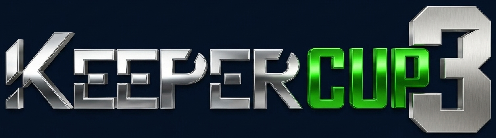

DEMO vertical con datos ficticios · tarjeta estándar 54 × 85,6 mm

10
Juan Carlos Pérez Andrade
Legacy FC
FRENTE
Legacy FC
ESCANEA PARA VERIFICAR
DEMO-8f3K2mQx
AUSPICIO
AUSPICIO
AUSPICIO
AUSPICIO
DORSO
Qué estás viendo: versión vertical y minimalista. Frente: logo, foto, número, nombre y club. La franja inferior cambia de color según el estado (verde habilitado, amarillo pendiente, rojo suspendido).
Dorso: escudo del club, QR (negro sobre blanco para que cualquier celular lo lea), logo del torneo y espacio para 4 auspiciantes. Los recuadros punteados se reemplazan por los logos reales de los auspiciantes.
El QR de este demo es real y apunta a una dirección de ejemplo. Para imprimir esta página: Ctrl+P → tamaño real, sin márgenes.